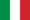

De: La Frikipedia, la enciclopedia extremadamente seria.
De: La Frikipedia, la enciclopedia extremadamente seria. De: La Frikipedia, la enciclopedia extremadamente seria.
| De la serie aquellos suicidas de baja plantilla: | |||
| Max Biaggi | |||
| |||
| Pais: |  Itallino | ||
| Moto nº: | 3 | ||
| Marca: | Aprilia | ||
| Moto: | Aprilia RSV4 SBK | ||
| Escudería: | Aprilia SBK | ||
| Nº de accidentes provocados: | |||
| Nº de motos destrozadas: | |||
| Nº de muertes que se le atribuyen: | No le viste la cara de perturbado, perdón, no insultemos a los locos
| ||
| ¿Ha ganao alguna vez algo? | 42 y 4 títulos + 14 y 1 título de SBK | ||
«Voy a 500cc por que me aquí me aburro de ganar»
~ Max Biaggi demostrándonos su humildad
«Biaggi me metió el codo»
~ Valentino Rossi jodiendo a la prensa
Max Biaggi es, o eso cree SBK que estuvo en MotoGP y fué campeón 4 veces de 250cc y cuando fué a 500cc se creyó que le iba a ganar al más grande y eso que Kangaroo legend también había ganado 4 años seguidos en 500cc, luego acabó en Yamaha hasta 2003 que se fue al equipo de Sito Pons a buscar ayuda un asiento en MotoGP y lo hizo peor. En 2005 fue a Suzuki SBK y estuvo sin hacer absolutamente nada en la basura de MotoGP hasta el 2010 que pusieron un pepinaco y fue campeón. También es famoso por darle un codazo a Cataluña 2001 o por ser romano y haber triunfado (no como este), pero sobre todo, es famoso por su cara de ir tó ciclao.
A los 17 años le regalaron una moto que habían encontrado en un descampado y le metió Coca-Cola agitada, en su primera competición destrozó su moto contra un muro, en la segunda no sabía meterle la 2º y rompió el motor, en la 3º se le soltó una rueda, en la 4º le dieron por detrás y así hasta que inexpicablemente lo metieron en el campeonato del mundo de 250cc.
Entró en el 1/4L en 1991, igual que Doohan en 500cc (DJ Jaime también dijo que podía ganarle a Putísimo Amo con el mismo coche que él)
Fue a 500cc en el 1998 y ganó la primera carrera, poniéndose gallito con Doohan, al final Mick arrasó en el campeonato como siempre y Biaggi fue el segundo, el resto de años hasta 2004 se resumió en ser segundo y tercero siempre. En 2005 acabó con su trayectoria por fichar por Honda Repsol y quedar de 6º con su compi de 3º y acabó sin equipo.
En las Superbikes no consiguió gran cosa hasta el 2010, que fichó por Aprillia y arrasó en el campeonato sobornando a los organizadores, luego Paco Camps lo denunció y ese título está en los tribunales, más cerca que lejos para Mad Max, ahora no está haciendo mucho porque no sobornó a los organizadores.
Le dió un codazo a Cataluña 2001, pero luego se hicieron amigos con una sonrisa más forzada que la de Demi Lobato.
Más abajo se encuentra la definición gráfica de las amistades de Max.

| | ||
|
Autor(es):